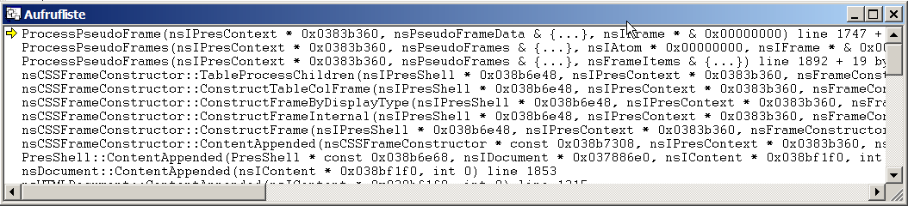

Stack Traces II
In the IDE you press
Alt+7
to get the window with the stack trace

Follow the instuctions in the
Bug Triagers Guide for crash bugs
Add the stack trace to the bug
Note which pointers are Zero or look like garbage